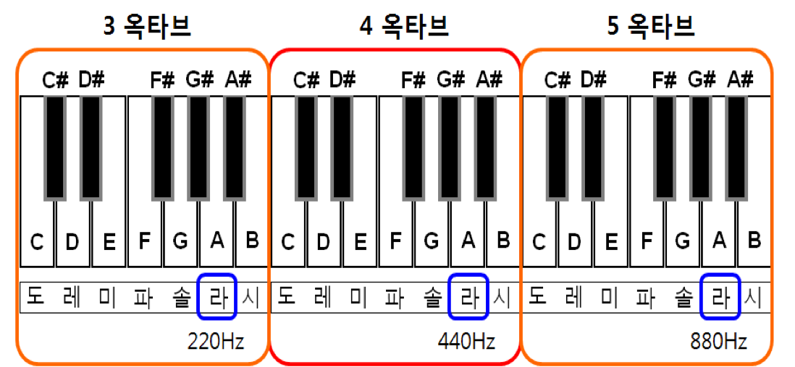
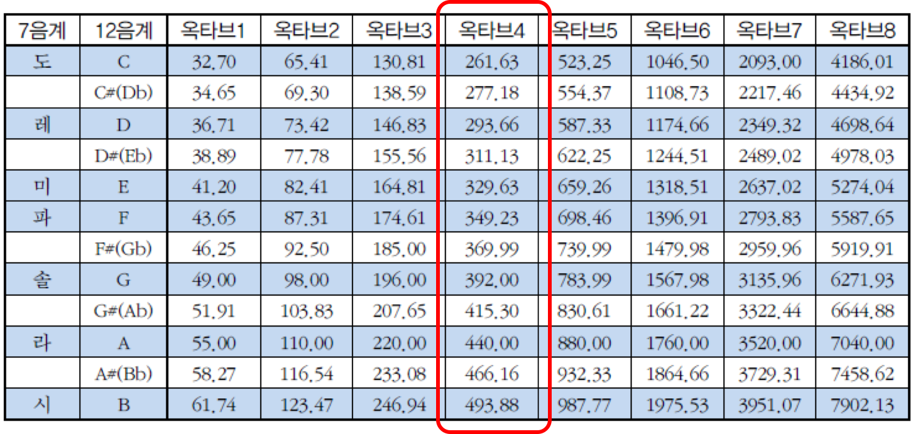
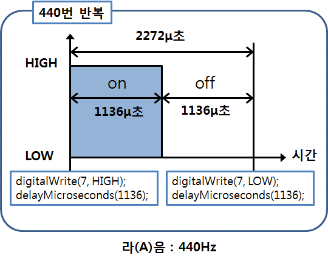
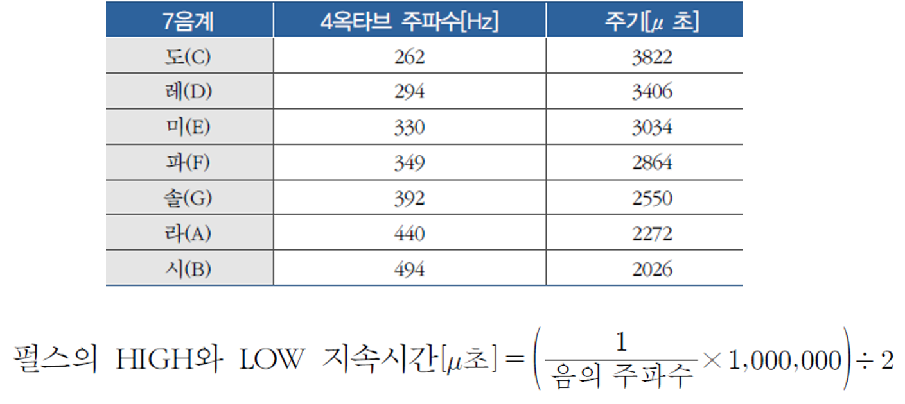
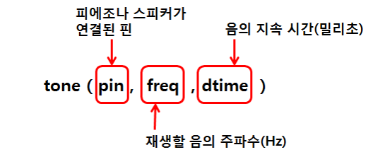
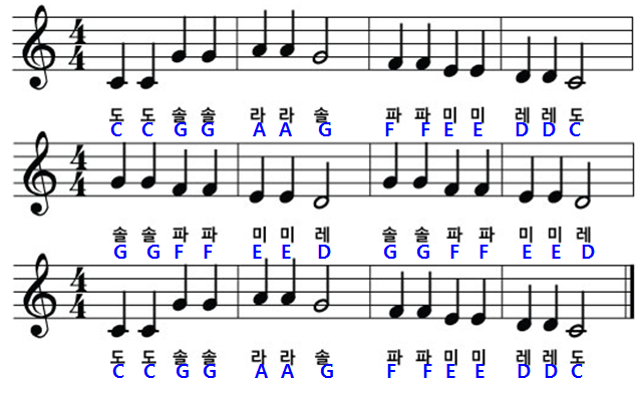
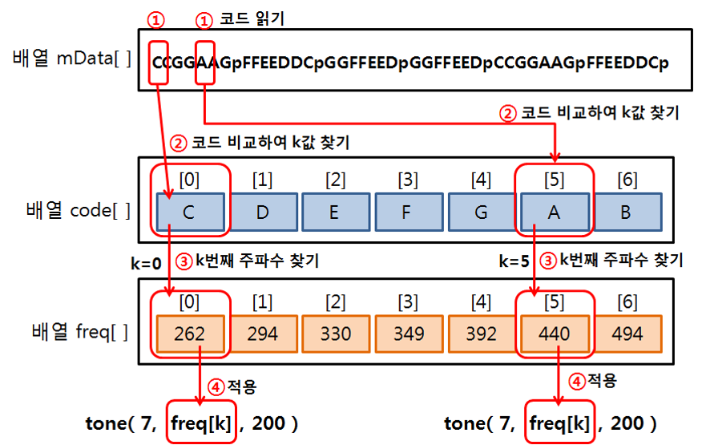
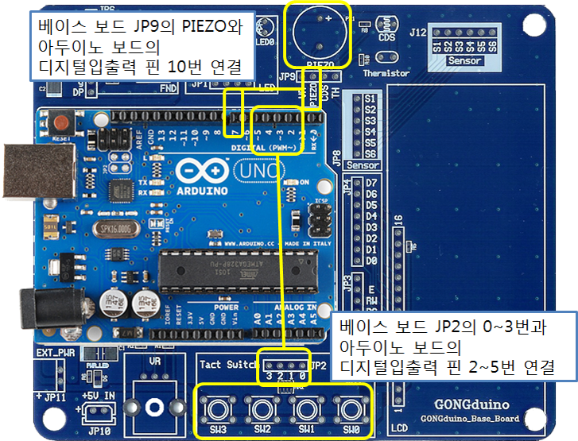
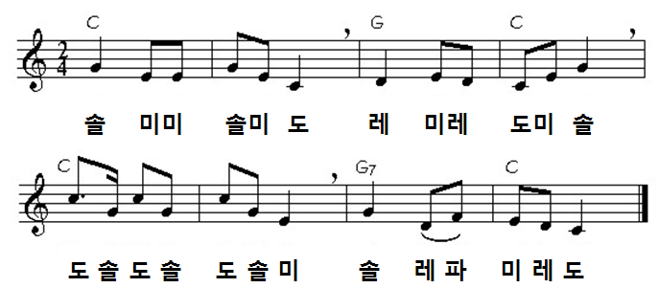

아두이노에서 소리내기
학습 목표
- 음계와 주파수와의 관계를 이해한다.
- tone() 함수를 이용하여 음악을 연주해 보자.
1. 소리내기 이론
2. 소리의 높낮이 (음계, SCALE)
- 주파수에 따라서 음의 높이(피치, pitch)가 다름
- 국제 피치음
- 피아노의 A(라)음 : 진동수 440Hz
- 12음계(scale) : 진동수 440Hz 를 등비수열로 12등분한 것
12등분된 음의 높이
- A, A#, B, C, C#, D, D#, E, F, F#, G, G#로 표시
| 12음계 |
7음계 |
주파수 |
주파수 계산식 |
| C |
도 |
261.63 Hz |
440 X 2(-9/12) |
| C# |
|
277.18 Hz |
440 X 2(-8/12) |
| D |
레 |
293.66 Hz |
440 X 2(-7/12) |
| D# |
|
311.13 Hz |
440 X 2(-6/12) |
| E |
미 |
329.63 Hz |
440 X 2(-5/12) |
| F |
파 |
349.23 Hz |
440 X 2(-4/12) |
| F# |
|
369.99 Hz |
440 X 2(-3/12) |
| G |
솔 |
392.00 Hz |
440 X 2(-2/12) |
| G# |
|
415.30 Hz |
440 X 2(-1/12) |
| A |
라 |
440.00 Hz |
440 X 2(0/12) |
| A# |
|
446.16 Hz |
440 X 2(1/12) |
| B |
시 |
493.88 Hz |
440 X 2(2/12) |
도레미파솔라시
는 12음계 중 7개만을 표현C(도), D(레), E(미), F(파), G(솔), 라(A), 시(B)

옥타브에 따른 음계의 주파수

3. 소리 만들기
3.1 소리 발생 원리
3.2 예제 1: 표준 라(A)음 내기
- 표준
라(A)
음 : 440Hz의 주파수(약 2272μ초의 주기)
- 디지털출력으로 HIGH와 LOW를 각각 1136μ초씩 출력
- delayMicroseconds( )함수 : μ초 단위의 시간지연
3.2.1 하드웨어 구성
3.2.2 Sketch 프로그램
/*
주파수가 440Hz인 라(A)음을 1초동안 출력
*/
void setup( ) {
pinMode(7, OUTPUT); // 피에조와 연결된 핀 7을 출력으로 설정
}
void loop( ) {
for (int k=0; k<440; k++) { // 주파수 갯수만큼 반복 (1초 동안)
digitalWrite(7, HIGH); // HIGH 펄스
delayMicroseconds(1136);// HIGH 펄스 지속시간
digitalWrite(7, LOW); // LOW 펄스
delayMicroseconds(1136);// LOW 펄스 지속시간
}
delay(1000);
}

-[토의] 위 코드의 for 문에서 440 번 반복하는 것은 어떠한 의미를 가지는가?
3.3 예제 2
- 피에조를 통하여 ‘도레미파솔라시’ 출력
- 4옥타브 도레미파솔라시의 주파수와 주기

3.3.1 하드웨어 구성
3.3.2 Sketch 프로그램
/*
피에조를 통하여 ‘도레미파솔라시’ 출력
*/
void setup() {
pinMode(7,OUTPUT);
}
void loop() {
scalePlay(262); // 도 (주파수 262Hz)
scalePlay(294); // 레 (주파수 294Hz)
scalePlay(330); // 미 (주파수 330Hz)
scalePlay(349); // 파 (주파수 349Hz)
scalePlay(392); // 솔 (주파수 392Hz)
scalePlay(440); // 라 (주파수 440Hz)
scalePlay(494); // 시 (주파수 494Hz)
exit(0); // loop 종료
}
/*
파라미터로 주어진 주파수 값(freq)으로 1초 동안 음을 내기 위한 함수
freq: 주파수 값
*/
void scalePlay(int freq) {
int T = 1000000/freq; // 펄스주기 (마이클마이크로초 단위)
int t = T/2; // 펄스주기의 1/2
for (int k=0; k<freq; k++) { // 주파수 갯수만큼 반복 (1초 동안)
digitalWrite(7, HIGH); // HIGH 펄스 출럭
delayMicroseconds(t); // HIGH 펄스 지속시간
digitalWrite(7, LOW); // LOW 펄스 출럭
delayMicroseconds(t); // LOW펄스 지속시간
}
}
4. tone( )과 noTone( ) 함수
tone(pin,freq,dtime ) : 소리를 나게 하는 함수
- 재생하고자 하는 음의 주파수(freq)와 그 음이 지속되어야 할 시간(dtime)을 msec 단위로 지정
- 음이 지속될 시간을 지정하지 않으면, 다른 tone( )함수가 실행되거나 noTone( )함수가 실행 될 때까지 계속 출력

noTone(pin ) : 소리가 나지 않도록 하는 함수
4.1 예제 3
4.2 예제 4
- tone() 함수 사용하여
반짝반짝 작은 별
의 연주

4.2.1 하드웨어 구성
4.2.2 프로그램 코드
연주할 곡의 계이름 코드를 문자 배열로 표시 (코드 사이의 'p'는 앞의 음이 2박자임을 나타냄)
char mData[ ]="CCGGAAGpFFEEDCCpGGFFEEDpGGFFEEDpCCGGAAGpFFEEDDCp";
sizeof()함수를 사용하여 저장된 배열의 크기 측정
const byte mSize = sizeof(mData);
'도레미파솔라시' 코드는 배열 code[]에 저장, 각 코드의 순서에 따른 각 음의 주파수는 배열 freq[]에 저장
char code[ ] = {'C', 'D', 'E', 'F', 'G', 'A', 'B'};
int freq[ ] = {262, 294, 330, 349, 392, 440, 494};
다음과 같은 절차로 악보가 연주됨
- 악보가 들어 있는 배열 mData[ ]에서 하나 씩 문자를 읽어온다.
- 읽어 온 문자를 배열 code[ ]의 내용과 비교하여 같은 문자가 저장되어 있는
배열 code[ ]에서의 순서 k를 찾는다.
- 배열 freq[ ]에서 k번째인 freq[k]의 값을 tone( )함수 전달한다.
- freq[k]의 값을 적용하여 tone(7, freq[k], 200) 실행한다.

- 전체 코드
const int piezo=7;
char code[ ]= {'C', 'D', 'E', 'F', 'G', 'A', 'B'};
unsigned int freq[ ]= {262, 294, 330, 349, 392, 440, 494};
char mData[ ]="CCGGAAGpFFEEDDCpGGFFEEDpGGFFEEDpCCGGAAGpFFEEDDCp";
const byte mSize=sizeof(mData);
void setup( ) {
pinMode(piezo, OUTPUT);
}
void loop( ) {
int playT=500; // 1박자를 0.5초
for (int m=0; m<mSize; m++) {
for(int k=0; k<7; k++) {
if( mData[m]==code[k] ) { // 배열 mData[]의 문자와 배열 code[] 의 문자 비교하여 인텍스 k 검색
tone(piezo, freq[k], playT); // freq[k]의 값을 tone( )함수 전달
delay(playT); // 1박자 연주
}
}
if (mData[m]=='p') { // 배열 mData[]의 문자가 'p' 인 경우
delay(playT); // 1박자 더 쉼
}
}
noTone(piezo);
delay(2000);
exit(0);
}
4.2.3 프로그램 코드 (다른 방식의 구현)
#define C 262
#define D 294
#define E 330
#define F 349
#define G 392
#define A 440
#define B 494
const int piezo=7;
int mData[] = {C,C,G,G,A,A,G,F,F,E,E,D,D,C};
const byte mSize = sizeof(mData)/sizeof(mData[0]);
void setup() {
pinMode(piezo, OUTPUT);
}
void loop() {
int playT=500;
for (int i=0; i < mSize; i++) {
if (i==6 || i==13)
playT=1000;
else
playT=500;
tone(7,mData[i],playT);
delay(playT);
}
exit(0);
}
4.3 예제 5: 간이형 키보드 만들기
4.3.1 하드웨어 구성
d
4.3.2 1단계
4.3.3 2단계
4.3.4 3단계 (코드 축약 버전)
5. 연습문제
음과 박자를 고려하여, 다음 동요를 연주하는 스케치를 작성하여 보자.

- 힌트
- 박자를 나타내는 배열(time[])을 만들어 음마다 연주할 박자를 기록하고, 음을 연주할 때는 예제4 코드와 같이 tone()함수를 이용하고, 박자를 적용할 때는 배열 time[]의 값을 delay()함수에 파라미터로 전달하는 방법을 사용할 수도 있습니다.